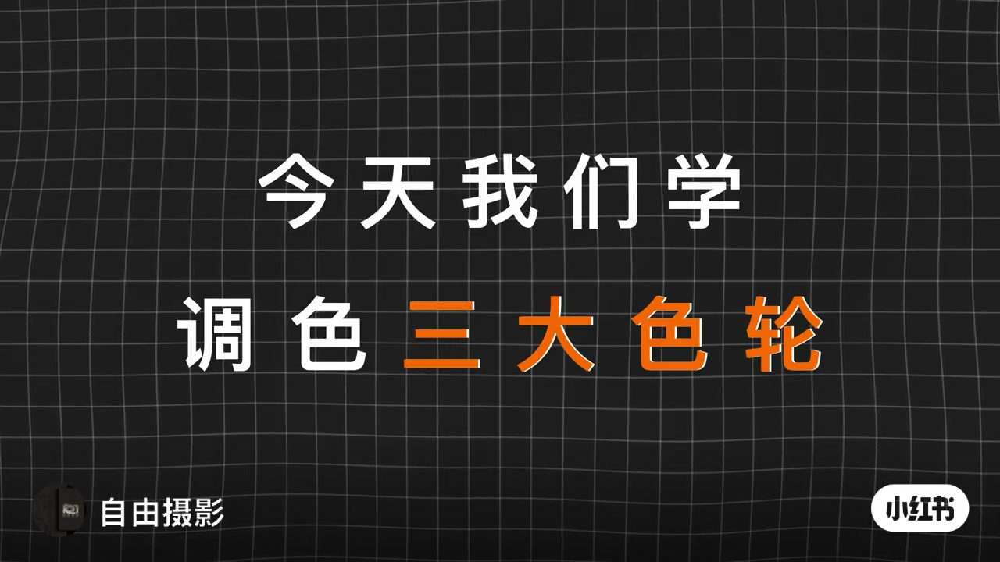
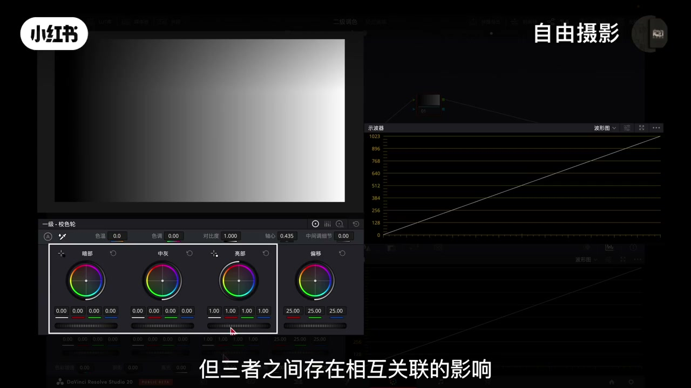
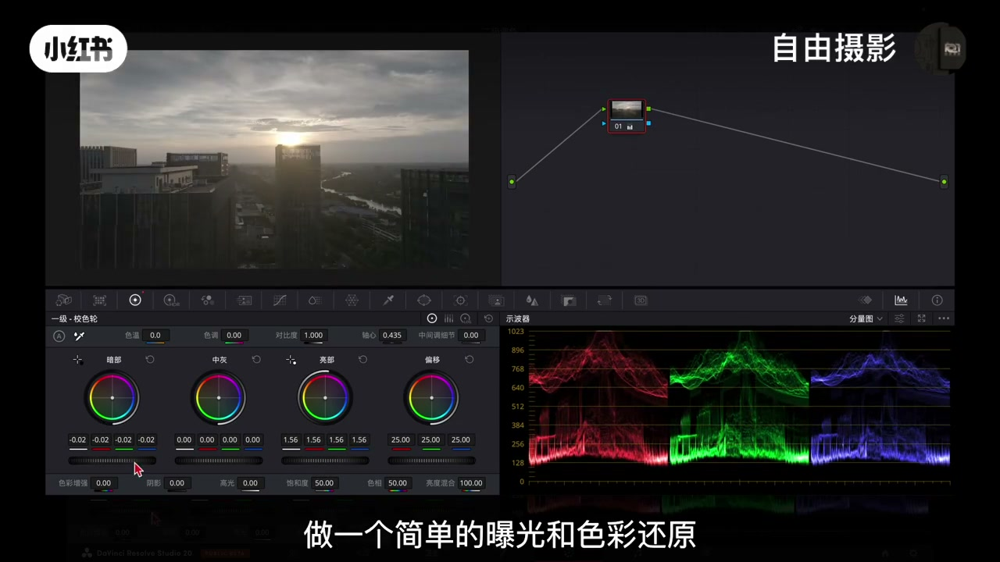

01
中文
今天我们学调色的三大色轮。
EN
Today we'll learn the three major color wheels of color grading.
表达提示color grading（调色）

Scene English · 达芬奇 · 三大色轮
Master DaVinci's Three Color Wheels in One Video
🎧 语音讲解
Opening: The Three Color Wheels
情境本节课学调色面板中最核心的工具——三大色轮，搞清它们的区别和使用时机。
今天我们学调色的三大色轮。
Today we'll learn the three major color wheels of color grading.
表达提示color grading（调色）
面对一级校色轮、log色轮和hdr色轮，许多同学仍然会困惑他们到底有什么区别。
Facing the primary wheels, log wheels, and HDR wheels, many students still wonder how they differ.
表达提示primary wheels（一级校色轮）
今天我们通过原理讲解和实战对比，一次性为你彻底理解他们的设计逻辑。
Today, through principle explanations and hands-on comparisons, we'll fully understand their design logic.
表达提示hands-on comparisons（实战对比）
开门见山立框架
三组术语对照

Primary Wheels: Four Zones & Global Offset
情境最基础也最重要的一级校色轮，包括亮部、中灰、暗部和偏移四个色轮。
一级校色轮通常包括四个部分：亮部色轮、中灰色轮、暗部色轮和偏移色轮。
The primary color wheels usually include four parts: gain, gamma, lift, and offset.
表达提示gain/gamma/lift/offset（亮部/中灰/暗部/偏移）
偏移色轮负责全局调整，当你向右拖动它时，整个画面的亮度会整体提升。
The offset wheel handles global adjustment; when you drag it right, the whole image brightens.
表达提示global adjustment（全局调整）
当你调整亮部色轮的亮度时，画面高光区域的变化最明显，但中灰和暗部区域的亮度也会随之发生渐变式的连带变化。
When you adjust the gain wheel, highlights change the most, while midtones and shadows shift along in a gradual chain.
表达提示gradual chain（渐变式连带）
当你用一级校色轮为亮部增加红色时，高光区域的改变最为明显，同时红色也会自然的向中灰和暗部区域渗透。
When you add red to the highlights, the change is strongest there, and the red naturally bleeds into the midtones and shadows.
表达提示bleed into（渗透）
四分区结构
offset=全局均匀调整
三区联动渐变
Log Wheels: Tonal Isolation
情境log色轮同样包含高光、中间调、阴影和偏移，但三区调整逻辑高度独立。
当你调整高光色轮时，它的影响会非常集中的作用在画面中最亮的区域。
When you adjust the highlight wheel, its effect focuses tightly on the brightest parts of the image.
表达提示focus on（聚焦作用于）
这种调整对于暗部和中间调的影响被极大的隔离了，他们基本会保持原状。
The impact on shadows and midtones is heavily isolated; they basically stay as they were.
表达提示heavily isolated（极大隔离）
因此在实际使用中，log色轮相比一级校色轮能实现更精准可控的调整。
In practice, log wheels achieve more precise, controllable adjustments than primary wheels.
表达提示precise and controllable（精准可控）
如果调整幅度过大，会破坏影调间的平滑过渡，导致色彩或亮度断层。
If you push too far, you'll break the smooth tonal transitions and cause color or brightness banding.
表达提示banding（断层/色带）
三区独立隔离
染色同理精准
红线警示

HDR Wheels: Seven Zones
情境最精细也最强大的HDR色轮，不是只能用于HDR素材，七分区细分影调。
很多人会误以为他只能用一HDR素材，其实不然，他能出色的处理任何类型的画面。
Many people assume it only works on HDR footage, but in fact it handles any kind of image beautifully.
表达提示HDR footage（HDR素材）
它的核心是一套超级分区系统，将影调精细的划分为七个色轮。
Its core is a super-zone system that splits tonality into seven precise color wheels.
表达提示super-zone system（超级分区系统）
第一个色轮是global用于整体调整，specular镜面高光控制最刺眼的极亮光，如光源、金属反光。
The first wheel is Global for overall adjustment; Specular controls the harshest bright lights like sources and metal glints.
表达提示Specular（镜面高光）
light亮部控制中间调偏亮的部分，常影响主体肤色；shadow阴影控制中间调偏暗的部分，是塑造物体体积感的关键。
Light controls the brighter midtones, often affecting skin tones; Shadow controls the darker midtones and is key to volume.
表达提示volume（体积感）
不限于HDR素材
七分区从右到左
两个关键分区
HDR Wheel Parameters: Button & Sliders
情境每个HDR色轮都附带功能参数，让选区控制更精准。
你可以在左上角按住圆形按钮，查看色轮对画面的影响。
You can hold the round button in the upper-left corner to see the wheel's effect on the image.
表达提示hold the round button（按住圆形按钮）
左侧滑块是影响画面选区范围的下限，右侧滑块是上限，你可以把它理解为对选区范围的柔化程度。
The left slider is the lower limit of the selected range, the right slider is the upper limit—think of them as softness control.
表达提示softness control（柔化程度）
在色轮下方可以单独调整这个区域的曝光与饱和度，而不会影响画面其他色彩。
Below the wheel you can adjust that zone's exposure and saturation without affecting other colors.
表达提示exposure and saturation（曝光与饱和度）
在global色轮左侧滑块影响的是色温，向上滑动偏黄，向下滑动偏蓝。
On the Global wheel the left slider controls temperature—slide up for warmer yellow, down for cooler blue.
表达提示color temperature（色温）
参数四件套
global色轮特殊
Demo: Saving an Overexposed Sun
情境用一个实际素材演示三组色轮各自的选轮逻辑。
首先我们用一级校色轮来还原一下画面，大家注意看示波器。
First we use the primary wheels to correct the footage—everyone watch the scopes.
表达提示the scopes（示波器）
如果我尝试用一级校色轮的高光色轮单独往下压，效果并不理想，因为中灰区域也会跟着被压暗。
If I try to push the highlights down with the primary gain wheel, it doesn't work well, because the midtones get dragged down too.
表达提示drag down（连带压暗）
我们切换到log色轮，用它的高光色轮单独往下压，过曝的太阳和云层的高光就被压回来了。
We switch to the log wheels and push the highlight wheel down alone—the overexposed sun and clouds come right back.
表达提示overexposed（过曝）
选中highlight的高光色轮稍微向上提亮，只有太阳核心及最亮的部分被提亮了，而旁边稍暗的云层细节完全不受影响。
Select the highlight wheel and lift slightly—only the sun's core and the brightest parts brighten, while the dimmer clouds stay untouched.
表达提示stay untouched（完全不受影响）
选轮三连
HDR精调
Tint Comparison & Summary
情境同一染色操作在三组色轮上的效果对比，一目了然。
先用一级校色轮染色，将高光色轮往红色拉，整个画面从高光到暗部都会整体偏红，变化是全球性的。
First, tint with the primary wheel—pull the highlights toward red and the whole image shifts red from top to bottom; the change is global.
表达提示global change（全球性变化）
log色轮染色将高光色轮往红色拉，主要是云层和高光区域会偏红，对中间调影响较小。
With log wheels, pulling highlights toward red tints mainly the clouds and highlight areas, barely touching the midtones.
表达提示barely touching（几乎不触及）
HDR色轮染色将highlight高光色轮往红色拉，只有最亮的高光点如太阳边缘会精确的变红，旁边的云层颜色完全不变。
With HDR wheels, pulling highlight toward red tints only the brightest points like the sun's edge—the clouds beside it stay completely unchanged.
表达提示pixel-level precision（像素级精度）
从一级校色轮的整体控制到log色轮的影调隔离再到HDR色轮的像素级精度，这不仅是工具的切换，更是一种调色思维的升级。
From the primary wheels' global control to log wheels' tonal isolation to HDR wheels' pixel-level precision—this isn't just switching tools, it's an upgrade in grading mindset.
表达提示grading mindset（调色思维）
高光染红对比
暗部染绿同理
总结定调
请将中文句子翻译成英文：当你调整高光色轮时，它的影响会非常集中的作用在画面中最亮的区域。
请将英文翻译成中文：From the primary wheels' global control to log wheels' tonal isolation to HDR wheels' pixel-level precision—this is an upgrade in grading mindset.
The primary wheels drag midtones down too, making the image dull and dark
Overshooting breaks smooth tonal transitions and causes banding
They excel at precise control on any footage